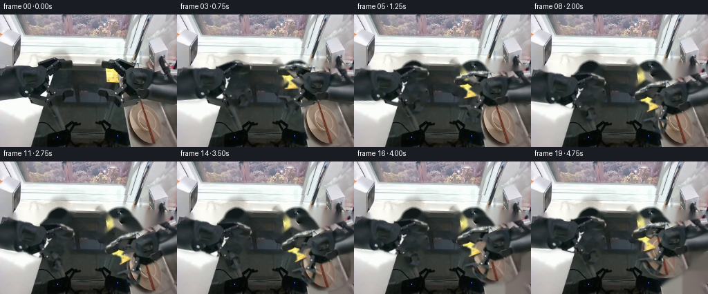
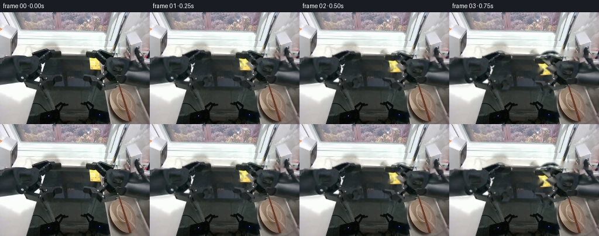

CODING AGENTS AS PIXEL WORLD MODELS
traex/GPT-5.6-Sol · common50_0007
点击播放 · 原生 RGB 像素
此结果可播放，但该运行尚未通过最终提交审核。页面展示不代表评测通过。
逐轮保存的候选
回放视频、检查图与代码变化。
每份候选均可单独播放。实际图片检查记录在下方工具轨迹中。
候选 01播放与检查图
点击播放 · 原生 RGB 像素


展开代码变化
--- 上一保存版本
+++ 本次保存版本
@@ -0,0 +1,162 @@
+"""Generate a short, fixed-camera manipulation sequence from the supplied frame.
+
+The two robot assemblies and the bowl are treated as rigid image-space bodies.
+The arms pivot about their off-screen mounts, reach into the sink, and the right
+gripper then lifts the bowl (with the chopsticks resting in it) inward.
+"""
+
+from pathlib import Path
+
+import cv2
+import numpy as np
+from PIL import Image
+
+import artifact_io
+
+
+ROOT = Path(__file__).resolve().parent
+W, H = 256, 192
+
+
+def polygon_mask(points, holes=(), blur=0.85):
+ """Return a softly antialiased mask for a hand-traced rigid object."""
+ m = np.zeros((H, W), np.uint8)
+ cv2.fillPoly(m, [np.asarray(points, np.int32)], 255)
+ for hole in holes:
+ cv2.fillPoly(m, [np.asarray(hole, np.int32)], 0)
+ if blur:
+ m = cv2.GaussianBlur(m, (0, 0), blur)
+ return m
+
+
+def smoothstep(x):
+ x = np.clip(x, 0.0, 1.0)
+ return x * x * (3.0 - 2.0 * x)
+
+
+def warp_rgba(rgb, alpha, matrix):
+ """Affine-warp a premultiplied RGB cutout and its alpha."""
+ a = alpha.astype(np.float32) / 255.0
+ premul = rgb.astype(np.float32) * a[..., None]
+ wp = cv2.warpAffine(
+ premul, matrix, (W, H), flags=cv2.INTER_LINEAR,
+ borderMode=cv2.BORDER_CONSTANT, borderValue=0,
+ )
+ wa = cv2.warpAffine(
+ a, matrix, (W, H), flags=cv2.INTER_LINEAR,
+ borderMode=cv2.BORDER_CONSTANT, borderValue=0,
+ )
+ straight = np.zeros_like(wp)
+ good = wa > 1e-4
+ straight[good] = wp[good] / wa[good, None]
+ return np.clip(straight, 0, 255), np.clip(wa, 0, 1)
+
+
+def over(canvas, rgb, alpha):
+ return canvas * (1.0 - alpha[..., None]) + rgb * alpha[..., None]
+
+
+def add_shadow(canvas, alpha, dx=1.5, dy=3.0, strength=0.20, sigma=2.2):
+ mat = np.float32([[1, 0, dx], [0, 1, dy]])
+ sh = cv2.warpAffine(alpha, mat, (W, H), flags=cv2.INTER_LINEAR)
+ sh = cv2.GaussianBlur(sh, (0, 0), sigma) * strength
+ return canvas * (1.0 - sh[..., None])
+
+
+def main():
+ source = np.asarray(Image.open(ROOT / "first_frame.png").convert("RGB"))
+
+ # Tight silhouettes around the left and right robot arm/gripper assemblies.
+ # Small holes preserve the visible sink through the open jaws.
+ left_mask = polygon_mask(
+ [(0, 74), (16, 77), (31, 76), (43, 73), (57, 72),
+ (69, 66), (84, 62), (101, 64), (106, 71), (102, 77),
+ (94, 81), (90, 88), (96, 96), (101, 98), (96, 107),
+ (105, 121), (98, 130), (91, 132), (84, 123), (78, 114),
+ (69, 117), (57, 117), (44, 116), (31, 122), (0, 124)],
+ holes=[
+ [(75, 74), (89, 69), (96, 70), (85, 82)],
+ [(72, 91), (86, 84), (91, 89), (83, 99)],
+ [(80, 105), (94, 101), (92, 111), (86, 116)],
+ [(91, 115), (99, 113), (101, 120), (97, 125)],
+ ],
+ )
+ right_mask = polygon_mask(
+ [(256, 75), (241, 77), (229, 75), (217, 72), (204, 71),
+ (192, 66), (177, 63), (151, 65), (146, 70), (148, 77),
+ (157, 82), (162, 89), (158, 96), (147, 98), (143, 104),
+ (147, 112), (157, 114), (151, 124), (157, 133), (164, 135),
+ (172, 126), (178, 116), (188, 117), (200, 119), (214, 117),
+ (226, 121), (240, 124), (256, 125)],
+ holes=[
+ [(160, 71), (176, 68), (184, 73), (170, 82)],
+ [(164, 86), (177, 81), (185, 88), (175, 97)],
+ [(158, 101), (174, 99), (173, 108), (162, 112)],
+ [(155, 117), (164, 115), (170, 123), (162, 130)],
+ ],
+ )
+
+ # The cream-white bowl and both brown chopsticks form one rigid payload.
+ bowl_mask = polygon_mask(
+ [(201, 114), (220, 115), (237, 123), (249, 136), (255, 149),
+ (255, 169), (247, 181), (233, 189), (214, 192), (199, 187),
+ (189, 177), (184, 162), (184, 144), (190, 127)],
+ blur=0.75,
+ )
+
+ # Remove the original bodies to reveal an approximately static work surface.
+ removal = np.maximum.reduce([left_mask, right_mask, bowl_mask])
+ removal = cv2.dilate((removal > 18).astype(np.uint8) * 255,
+ np.ones((5, 5), np.uint8), iterations=1)
+ # Inpainting RGB channels together keeps the countertop and dark basin calm.
+ base = cv2.inpaint(source, removal, 4, cv2.INPAINT_TELEA).astype(np.float32)
+
+ frames = []
+ ident = np.float32([[1, 0, 0], [0, 1, 0]])
+
+ for i in range(20):
+ if i == 0:
+ # Contract requirement: exact source pixels in the first frame.
+ frames.append(source.copy())
+ continue
+
+ # Reach for three seconds, settle briefly, then lift inward.
+ reach = smoothstep(i / 11.0)
+ lift = smoothstep((i - 12.0) / 7.0)
+
+ left_angle = -18.0 * reach + 7.0 * lift
+ right_angle = 30.0 * reach - 12.0 * lift
+
+ ml = cv2.getRotationMatrix2D((-4.0, 91.0), left_angle, 1.0)
+ mr = cv2.getRotationMatrix2D((260.0, 88.0), right_angle, 1.0)
+
+ # The payload remains on the draining board until the jaws have settled.
+ if lift > 0:
+ center = (219.0, 155.0)
+ mb = cv2.getRotationMatrix2D(center, -4.0 * lift, 1.0)
+ mb[:, 2] += np.array([-24.0 * lift, -23.0 * lift])
+ else:
+ mb = ident
+
+ bl_rgb, bl_a = warp_rgba(source, bowl_mask, mb)
+ ll_rgb, ll_a = warp_rgba(source, left_mask, ml)
+ rr_rgb, rr_a = warp_rgba(source, right_mask, mr)
+
+ canvas = base.copy()
+ # Restrained moving shadows make the unchanged camera and rigid motion
+ # read naturally without introducing global flicker.
+ canvas = add_shadow(canvas, bl_a, 1.0, 2.0, 0.13, 1.7)
+ canvas = over(canvas, bl_rgb, bl_a)
+ canvas = add_shadow(canvas, ll_a, 1.0, 2.5, 0.16, 1.8)
+ canvas = add_shadow(canvas, rr_a, -1.0, 2.5, 0.16, 1.8)
+ canvas = over(canvas, ll_rgb, ll_a)
+ canvas = over(canvas, rr_rgb, rr_a)
+
+ frames.append(np.clip(np.rint(canvas), 0, 255).astype(np.uint8))
+
+ frames = np.stack(frames, axis=0)
+ artifact_io.save(frames, ROOT)
+
+
+if __name__ == "__main__":
+ main()
可观测工具轨迹
实际执行的命令与返回图片。
命令 1exit 0
/bin/bash -lc "cat GENERATION_RULES.md && printf '\\n---PROMPT---\\n' && cat prompt.txt"
命令 2exit 0
/bin/bash -lc "find . -maxdepth 2 -type f -printf '%p %s bytes\\n' | sort"
命令 3exit 0
/bin/bash -lc "python - <<'PY'
from PIL import Image
im=Image.open('first_frame.png'); print(im.size, im.mode)
PY
which ffmpeg || true; which convert || true; python - <<'PY'
mods=['cv2','numpy','PIL','imageio','torch']
for m in mods:
try:
x=__import__(m); print(m,'ok',getattr(x,'__version__',''))
except Exception as e: print(m,'NO',e)
PY"命令 4exit 0
/bin/bash -lc "cat task_spec.json; sed -n '1,240p' artifact_io.py"
命令 5exit 0
/bin/bash -lc "python - <<'PY'
import cv2
im=cv2.imread('first_frame.png')
# save upscaled nearest and edge for inspection
cv2.imwrite('.tmp/up.png',cv2.resize(im,None,fx=4,fy=4,interpolation=cv2.INTER_NEAREST))
g=cv2.cvtColor(im,cv2.COLOR_BGR2GRAY)
e=cv2.Canny(g,50,120)
cv2.imwrite('.tmp/edges.png',e)
PY"命令 6exit 0
/bin/bash -lc "python generate.py && python - <<'PY'
import numpy as np
from PIL import Image
f=np.stack([np.asarray(Image.open(f'frames/{i:02d}.png')) for i in range(20)])
s=np.asarray(Image.open('first_frame.png'))
print(f.shape,f.dtype,'frame0 identical',np.array_equal(f[0],s))
print('mean abs adjacent',[round(float(np.abs(f[i].astype(int)-f[i-1]).mean()),2) for i in range(1,20)])
PY"保存候选 1 份；完成命令 6 次；可验证图片返回 0 张。原始 API 响应与完整日志保留在本地。